Springreiterin · Mallorca Amazona · Salto · Mallorca Show Jumper · Mallorca Cavalière · Saut d'obstacles · Majorque
Solide Wettkampferfahrung, vier eigene Pferde und ein klares Ziel: den nächsten Schritt machen — in einem erstklassigen Stall, der mich fordert und formt. Experiencia competitiva sólida, cuatro caballos propios y un objetivo claro: dar el siguiente paso — en una cuadra de élite que me exija y me forme. Solid competition experience, four horses of my own and a clear goal: to take the next step — in a top stable that challenges and shapes me. Une solide expérience en compétition, quatre chevaux bien à moi et un objectif clair : passer à l'étape suivante — dans une écurie d'élite qui me pousse et me forge.
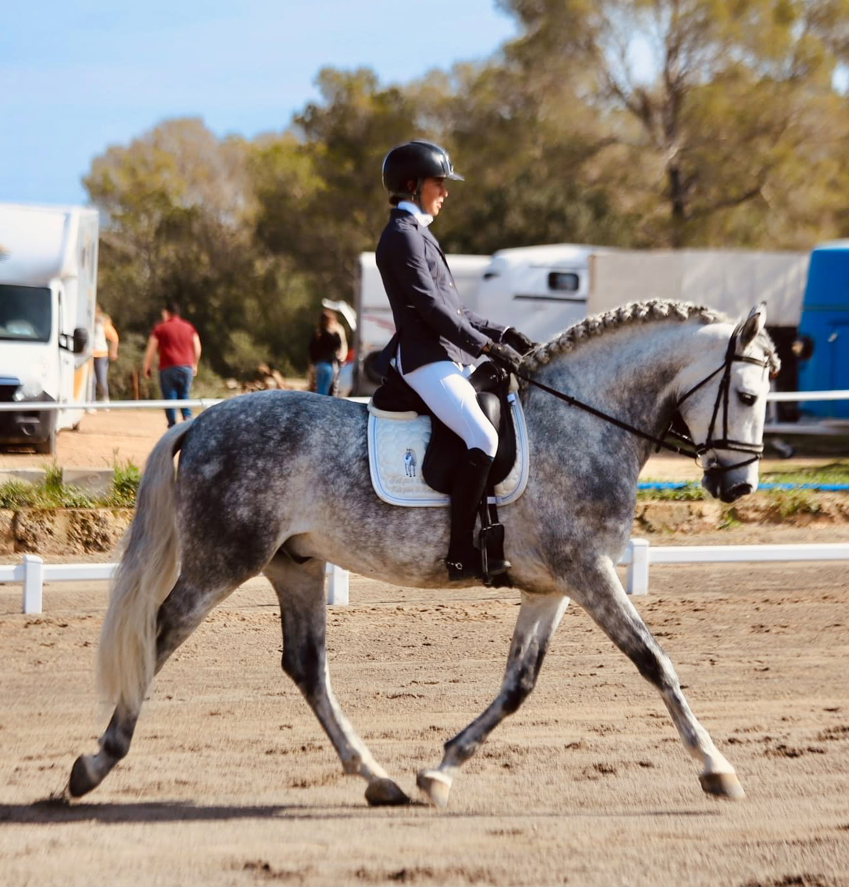
Über mich Sobre mí About me À propos
Ich bin 23 Jahre alt, deutsch — und seit meiner Kindheit auf Mallorca aufgewachsen. Viersprachig, mit der Insel groß geworden, dem Meer im Rücken und einem Pferd unter mir, so weit ich zurückdenken kann: ich reite seit meinem vierten Lebensjahr.
Vier eigene Pferde — darunter drei, die ich selbst gezüchtet habe — tägliches Training und regelmäßige Turnierteilnahme auf regionaler Ebene: das ist meine Basis. Was ich suche, ist das nächste Kapitel: ein professionelles Umfeld, in dem ich mich und meine Pferde auf ein höheres Niveau bringen kann.
Ich bin bereit, dafür zu arbeiten. Hart, konsequent und jeden Tag neu. Ich suche keinen einfachen Weg — ich suche den richtigen.
Tengo 23 años, soy alemana — y crecí en Mallorca desde niña. Cuatro idiomas, criada en la isla, con el mar detrás y un caballo debajo desde que tengo memoria: monto desde los cuatro años.
Cuatro caballos propios — tres de ellos criados por mí — entrenamiento diario y participación regular en concursos a nivel regional: esa es mi base. Lo que busco es el siguiente capítulo: un entorno profesional donde pueda llevarme a mí misma y a mis caballos a un nivel superior.
Estoy dispuesta a trabajar duro por ello — cada día, sin excusas. No busco el camino fácil. Busco el camino correcto.
I am 23 years old, German by nationality — and raised on Mallorca since childhood. Four languages, grown up on the island, with the sea behind me and a horse beneath me as far back as I can remember: I have been riding since the age of four.
Four horses of my own — three of them bred by me — daily training and regular competition at regional level: that is my foundation. What I am looking for is the next chapter: a professional environment where I can bring myself and my horses to a higher level.
I am prepared to work for it. Hard, consistently, every single day. I am not looking for an easy path — I am looking for the right one.
J'ai 23 ans, je suis allemande — et j'ai grandi à Majorque depuis l'enfance. Quadrilingue, élevée sur l'île, avec la mer dans le dos et un cheval sous moi aussi loin que je m'en souvienne : je monte depuis l'âge de quatre ans.
Quatre chevaux bien à moi — dont trois que j'ai élevés moi-même — un entraînement quotidien et une participation régulière à des concours en niveau régional : c'est ma base. Ce que je cherche, c'est le prochain chapitre : un environnement professionnel où je peux amener mes chevaux et moi-même à un niveau supérieur.
Je suis prête à travailler dur pour cela. Avec rigueur et constance, chaque jour. Je ne cherche pas le chemin facile — je cherche le bon.
Berufserfahrung Experiencia profesional Professional Experience Expérience professionnelle
Ich habe fünf Jahre lang in demselben Reitstall gearbeitet und praktische Erfahrung in Pferdepflege, Reiten und täglichem Stallbetrieb gesammelt. Diese Zeit hat mich gelehrt, verantwortungsbewusst, selbstständig und geduldig mit unterschiedlichen Pferdetypen zu arbeiten. He trabajado cinco años en el mismo centro ecuestre, adquiriendo experiencia práctica en el cuidado del caballo, la equitación y la gestión diaria de la cuadra. Esta experiencia me ha enseñado a trabajar de forma responsable, independiente y paciente con diferentes tipos de caballos. I worked for five years at the same riding stable, gaining practical experience in horse care, riding and daily stable management. This experience taught me to work responsibly, independently and patiently with different types of horses. J'ai travaillé pendant cinq ans dans le même centre équestre, acquérant une expérience pratique en soins aux chevaux, équitation et gestion quotidienne des écuries. Cette expérience m'a appris à travailler de manière responsable, indépendante et patiente avec différents types de chevaux.
Disziplinen Disciplinas Disciplines Disciplines
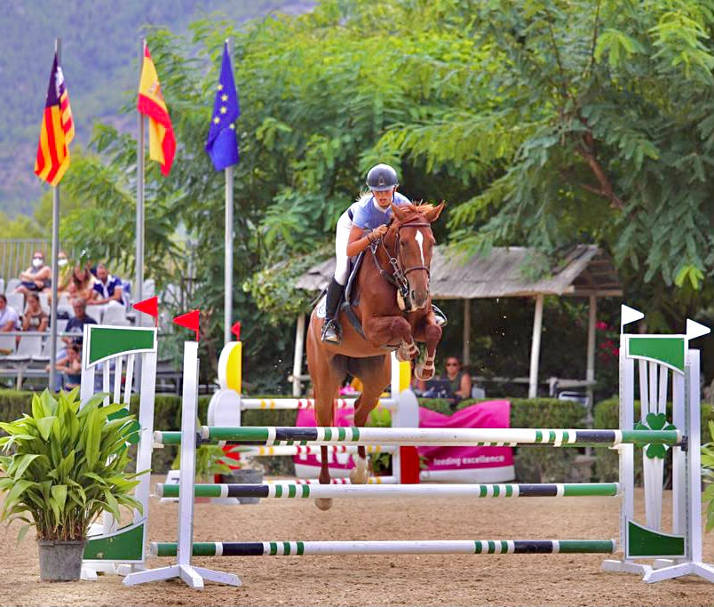
Wettkampfbilanz Resultados Achievements Palmarès
Über die Jahre hinweg habe ich erfolgreich an regionalen Meisterschaften und Balearenmeisterschaften teilgenommen und mehrere Titel sowie Podiumsplatzierungen erreicht. A lo largo de los años he competido con éxito en campeonatos regionales y de Baleares, logrando varios títulos y podios. Over the years, I have competed successfully in regional and Balearic championships, achieving several titles and podium finishes. Au fil des années, j'ai participé avec succès aux championnats régionaux et des Baléares, obtenant plusieurs titres et podiums.
Derzeit beginne ich mein eigenes 3-jähriges Pferd anzureiten und führe das frühe Training selbst durch. Mein Ziel ist es, ihn geduldig und korrekt zu entwickeln und eine solide Grundlage für seine Zukunft als Springpferd zu legen. Actualmente estoy empezando a montar mi propio caballo joven de 3 años, realizando el trabajo inicial yo misma. Mi objetivo es desarrollarlo con paciencia y corrección, construyendo una base sólida para su futuro en el salto. I am currently starting my own 3-year-old young horse under saddle, doing the early training myself. My goal is to develop him patiently and correctly, building a solid foundation for his future as a show jumping horse. Je débourre actuellement mon propre jeune cheval de 3 ans, en gérant moi-même le travail initial. Mon objectif est de le développer avec patience et rigueur, en construisant une base solide pour son avenir en saut d'obstacles.
Wenn alles nach Plan läuft und er bereit ist, hoffe ich, ihn 2027 in die 4-Jährige-Youngster-Prüfungen einzuführen. Si todo va según lo planeado y está listo, espero presentarlo en las pruebas de jóvenes caballos de 4 años en 2027. If everything goes according to plan and he is ready, I hope to introduce him to the 4-year-old young horse competitions in 2027. Si tout se passe comme prévu et qu'il est prêt, j'espère le présenter aux épreuves de jeunes chevaux de 4 ans en 2027.
Meine Pferde Mis caballos My horses Mes chevaux
Galerie Galería Gallery Galerie
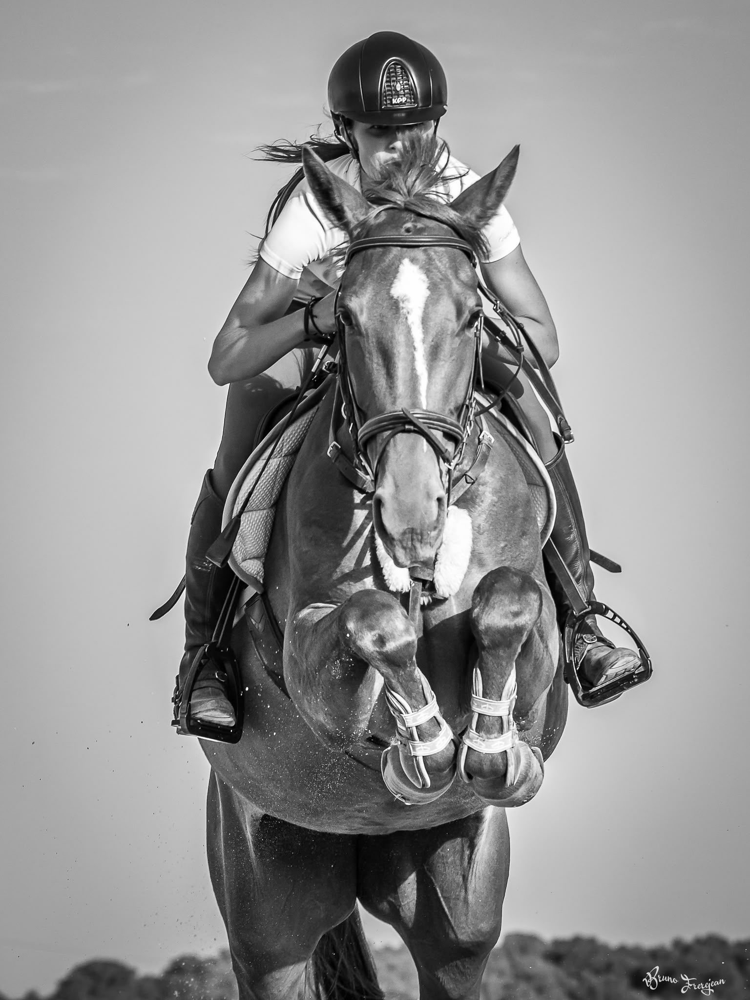
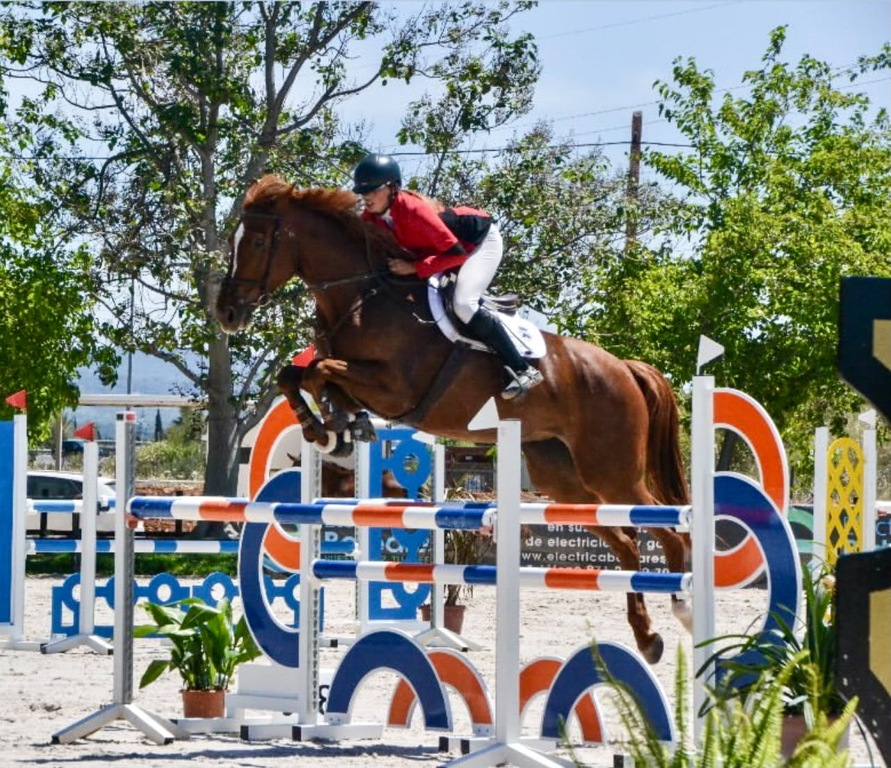
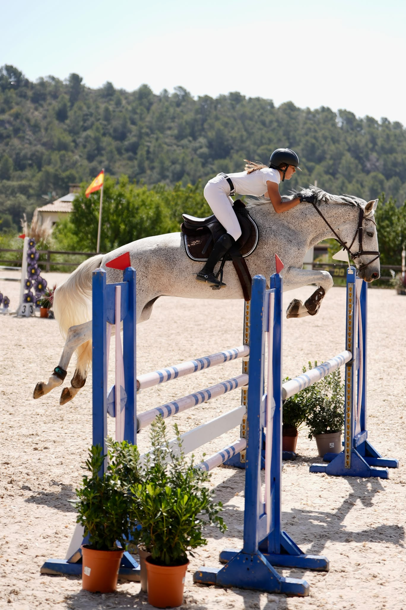
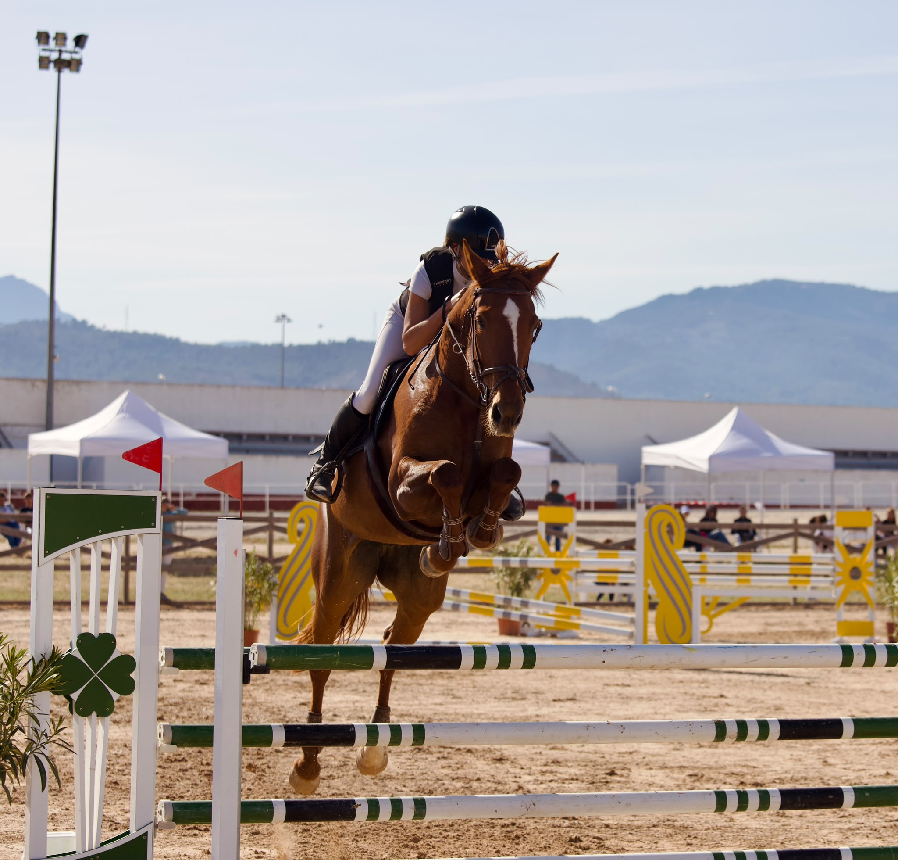
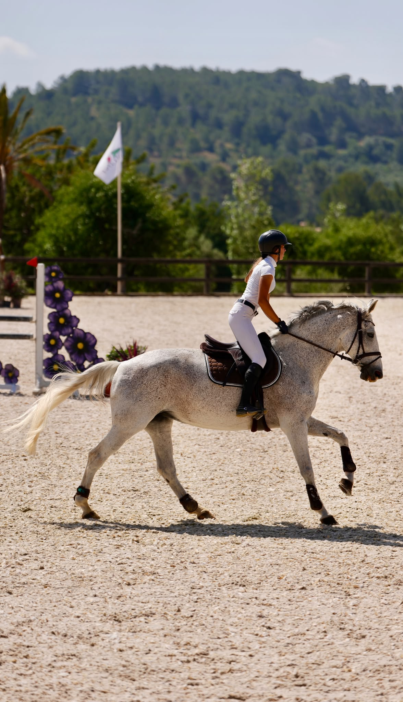
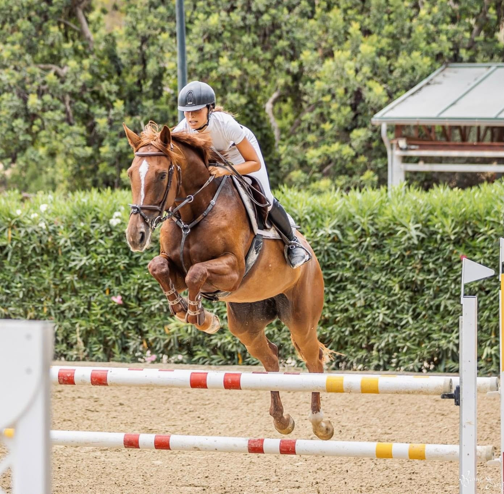
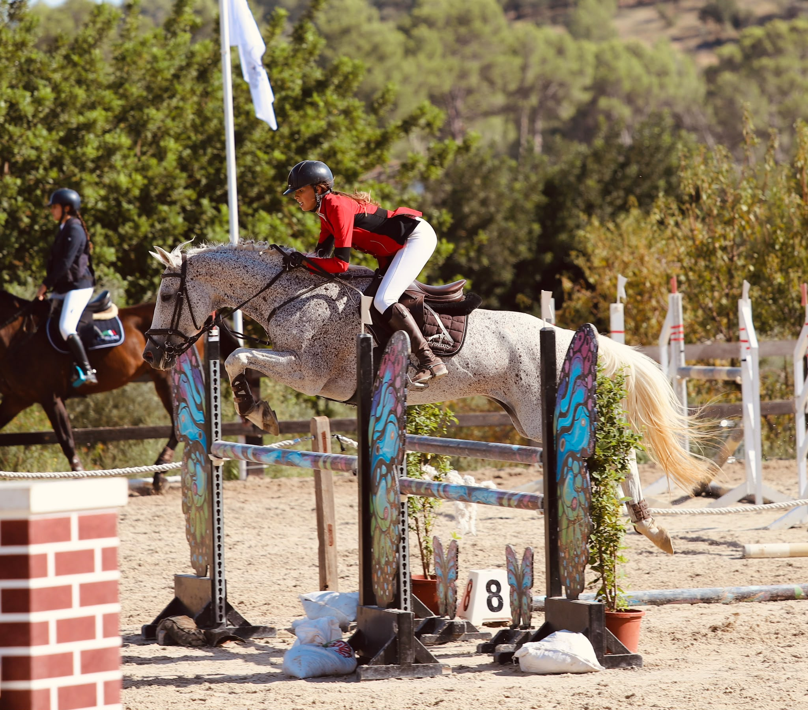
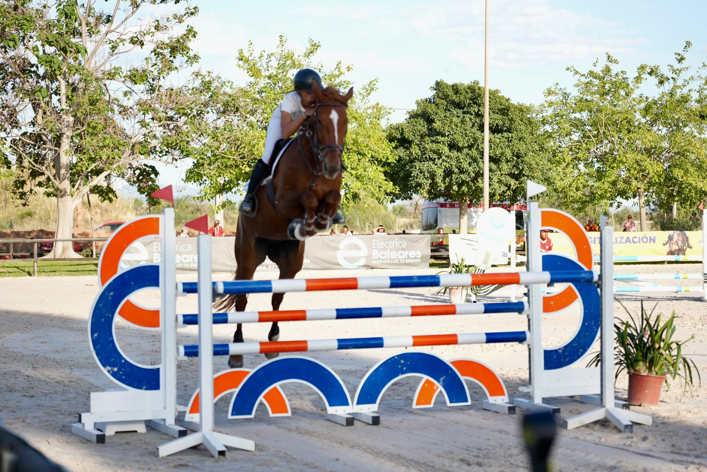
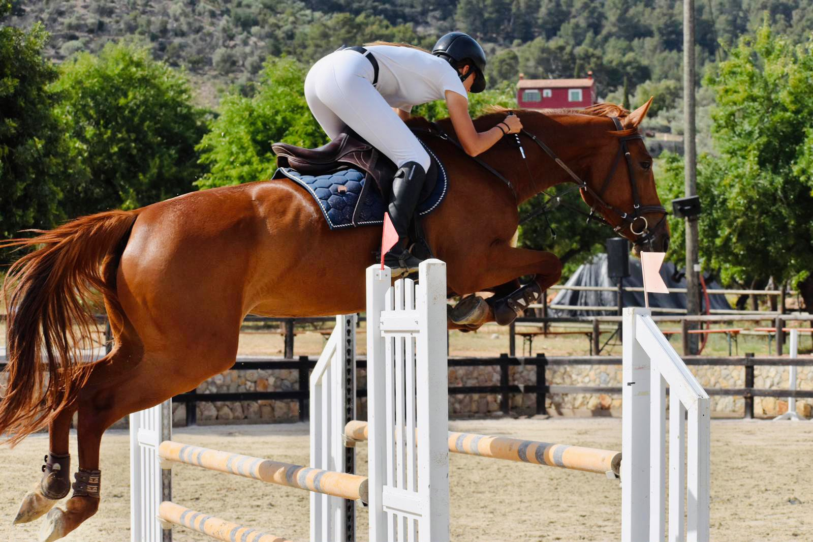
Videos Vídeos Videos Vidéos
Was ich suche Lo que busco What I'm looking for Ce que je cherche
Kontakt Contacto Contact Contact
Ob kurze Frage, Einladung zum Schnuppern oder ein erstes Gespräch — ich antworte gerne und unkompliziert. Per E-Mail, WhatsApp oder einfach anrufen.
Ya sea una pregunta breve, una invitación a conocernos o una primera conversación — respondo con mucho gusto. Por email, WhatsApp o simplemente llamando.
Whether a quick question, an invitation to visit or a first conversation — I am happy to respond promptly and without formality. By email, WhatsApp or simply by phone.
Qu'il s'agisse d'une question rapide, d'une invitation à se rencontrer ou d'une première conversation — je réponds volontiers et sans formalité. Par email, WhatsApp ou simplement par téléphone.